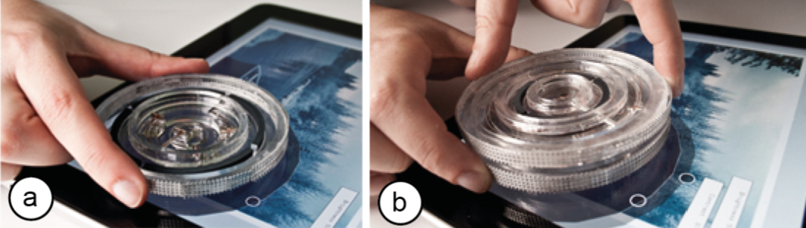
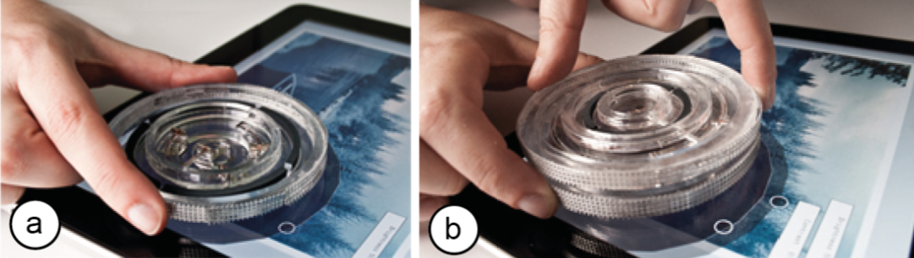

Publication
Chan, L., Mueller, S., Roudaut, A. and Baudisch, P.
CapStones and ZebraWidgets: Sensing Stacks of Building Blocks, Dials and Sliders on Capacitive Touch Screens
In Proceedings of
CHI ’12
, pp. 2189-2192.
DOI
Paper
Video
Slides
Talk
Press
Video
Talk
Slides


1 / 82

2 / 82

3 / 82

4 / 82

5 / 82

6 / 82

7 / 82

8 / 82

9 / 82

10 / 82

11 / 82

12 / 82

13 / 82

14 / 82

15 / 82

16 / 82

17 / 82

18 / 82

19 / 82

20 / 82

21 / 82

22 / 82

23 / 82

24 / 82

25 / 82

26 / 82

27 / 82

28 / 82

29 / 82

30 / 82

31 / 82

32 / 82

33 / 82

34 / 82

35 / 82

36 / 82

37 / 82

38 / 82

39 / 82

40 / 82

41 / 82

42 / 82

43 / 82

44 / 82

45 / 82

46 / 82

47 / 82

48 / 82

49 / 82

50 / 82

51 / 82

52 / 82

53 / 82

54 / 82

55 / 82

56 / 82

57 / 82

58 / 82

59 / 82

60 / 82

61 / 82

62 / 82

63 / 82

64 / 82

65 / 82

66 / 82

67 / 82

68 / 82

69 / 82

70 / 82

71 / 82

72 / 82

73 / 82

74 / 82

75 / 82

76 / 82

77 / 82

78 / 82

79 / 82

80 / 82

81 / 82

82 / 82

CapStones and ZebraWidgets:
Sensing Stacks of Building Blocks, Dials and Sliders on Capacitive Touch Screens
 Recent research proposes augmenting capacitive touch pads with tangible objects, enabling a new generation of mobile applications enhanced with tangible objects, such as game pieces and tangible controllers. In this paper, we extend the concept to capacitive tangibles consisting of multiple parts, such as stackable gaming pieces and tangible widgets with moving parts. We achieve this using a system of wires and connectors inside each block that causes the capacitance of the bottom-most block to reflect the entire assembly. We demonstrate three types of tangibles, called CapStones, Zebra Dials and Zebra Sliders that work with current consumer hardware and investigate what designs may become possible as touchscreen hardware evolves.
Introduction
In 2002, Rekimoto demonstrated how to track tangible objects on a capacitive sensing platform (capacitance tags [6]). More recent research transfers the concept to tablets (CapWidgets [4]) and demonstrates how to extend the idea into tangible game controllers attached to capacitive touch screens (Clip-on Gadgets [10]).
Many applications, however, require more complexity. Many board games allow users to stack gaming pieces; construction kits involve assembling objects in three dimensions; and complex navigation tasks require widgets with multiple degrees of freedom [8].
In this paper, we present how to create capacitive tangibles that address this by allowing for moving parts and stacking. We build on the concept of structured transparency [2,3] originally designed for tabletop computers based on diffuse illumination.
CapStones
CapStones are tangible blocks that allow the underlying capacitive touchscreen to identify blocks and to sense how they are arranged in 3D. Figure 1 shows one specific block design that uses a 2!2 grid of contacts. The capacitance of these contacts informs the touchscreen about the blocks identity, the stacking height, or both.
Figure 1: Enabling a game of tangible checkers, the capacitive touchscreen distinguishes a stack of two CapStones from the single CapStones surrounding it.
As illustrated by Figure 2, stacks of CapStones appear to the sensing platform as specific arrangements of contact points. A single block of the 2!2 design appears as two contact points. When blocks are added on top, additional contact points on the bottom CapStone become active, so that the sensing platform can determine stacking height of up to three blocks based on the number of active contact points (Figure 3).
Figure 2: Stacks of one, two, and three CapStones appear to the sensing platform as (a) two, (b) three, or (c) four contacts. (the black contacts indicate the number of blocks, the contact marked with the white dot connects blocks with each other)
CapStones hand down capacitance
CapStones work as follows. Without being touched by the user, blocks are invisible to the sensing platform. When users place or rearrange a CapStone, however, they touch an area around its side, labeled user connector in Figure 3. Wires inside a CapStone connect its user connector to one or more screen connectors located at the bottom of the block. Thus, a users touch causes these screen connectors to assume high capacitance, causing the block to become visible to the sensing platform.
Figure 3: Each CapStone features three types of connectors (here a design featuring 2x2 screen connectors).
In order to allow the sensing platform to sense a stack of CapStones, we add contacts to the top of each block. When stacked, these inter-block connectors link up with the screen contacts of the block on top. Figure 4a shows how we wire up these contacts to achieve the functionality of the blocks shown in Figure 3.
Figure 4: (a) The blocks from Figure 3 were implemented by wiring contacts so as to activate one additional screen contact for every additional block stacked on top. (b) The wiring behind the 3x3 CapStone design shown in Figure 5.
Figure 5: This 3x3 contact design can identify each block as either red or green and can pass down the color of up to 2 blocks above.
Figure 5 shows a larger design that offers additional functionality. As illustrated by Figure 4b, it uses three dedicated contacts to allow the sensing platform to determine the position and rotation of the block. The remaining 5 contacts identify the block as either red or green and hand down the color information of up to two blocks located on top.
Zebra Dials and Zebra Sliders
All block designs presented so far enforce strict alignment between blocks by using magnets for connectors. The following designs are not subject to this limitation but can be rotated or translated continuously.
Figure 6a shows a Zebra Dial. In the shown scene, a user uses it to adjust the brightness of a picture. Placing a second Zebra Dial on top adds a second degree of freedom (Figure 6b). The user can now spin both dials independently to adjust brightness and contrast.

Figure 6: (a) A single Zebra Dial allows users to adjust the brightness of the underlying image. (b) Placing a second Zebra Dial on top allows adjusting brightness and contrast.
Figure 7a shows a Zebra Slider. A single slider again allows adjusting brightness. As with the dials, we can increase functionality by placing a second widget on top (Figure 7b). The combined slider now allows users to adjust brightness and contrast.
Figure 7: (a) A single Zebra Slider allows users to adjust brightness. (b) A second Zebra Slider allows also adjusting contrast.
Slider and dial based on zebra rubber
Figure 8a illustrates the inner workings of the Zebra Dial. Similar to a CapStone, each dial has a user connector along the side and four screen connectors at the bottom. The four connectors are organized in a unique pattern, thereby forming a marker that allows the sensing platform to identify the dial. The orientation of the marker also communicates the rotation of the dial, e.g., determining the brightness parameter.
Figure 8: (a) The inner workings of a Zebra Dial and (b) a Zebra Slider. Block sides serve as user connectors.
Unlike a CapStone, however, each dial also holds a ring-shaped strip that extends all the way from the dials top to its bottom. It is this element that makes the dials stackable. It transmits the ID and rotation of the dial above down to the touchscreen, independent of the dials rotation. The strip thereby plays the role that screen connectors, inter-block connectors, and the internal wires play for CapStones.
The strip is made of a high-resolution conductive material called elastomeric connectors or zebra rubber and is shown in Figure 9a. It consists of thin alternating layers of conduc- tive (black) and non-conductive (white) rubber and was originally designed to connect an LCD to a printed circuit board without soldering. The material we use (from Top-Bound Enterprise, $20/pound) offers a resolution of 40 connections per cm. As shown in Figure 9b, we can use the material to effectively transmit touch.
Figure 9: (a) Zebra rubber consists of alternating layers of conductive and non-conductive material and therefore (b) effectively transmits touch. Here we are unlocking a touchscreen phone through the zebra rubber.
As illustrated by Figure 8a, the strip of zebra rubber allows the underlying touchscreen to see the connectors of the dial above. The same holds for the slider (Figure 8b).
Limitations of Today's Consumer Hardware
All designs shown above were designed to work on current consumer hardware, in particular the iPad. At the same time, this hardware is subject to two main limitations that limit the complexity of the designs we can achieve with it.
First, the limited spatial resolution of the capacitive sensor requires a minimum distance between the centers of the contact points (1.7cm for our block design on the iPad). Consequently, resulting block designs are larger than desirable and/or limited to a small number of contacts, thus less functionality. Short block IDs, for example, allow distinguishing only few types of blocks.
Second, the device thresholds capacitance. Rather than delivering an array of raw capacitance values, these devices clip capacitance against a threshold and merely deliver contact or no contact. This is a problem, because:
1. The threshold is calibrated for touch recognition. Blocks can therefore not be detected unless touched by the user. This requires workarounds. In order to distinguish between a CapStone being removed from the surface and the user merely letting go of the block, we proceed as follows: when the platform sees all contacts disappear at the same time, we conclude that the CapStone has been removed. If contacts fade one at a time, we conclude that it is still there.
Still, some limitations remain: when blocks are moved without the user picking them up, e.g., when a user accidentally bumps into the touchscreen, blocks slide, but the touch screen will be unaware of this, so that physical and virtual representations will be out of sync.
2. The device cannot sense beyond a certain stacking height. The reason lies in the way capacitance accumulates. When we stack multiple CapStones, the wires inside of them combine into a single long wire. At a certain stacking height, wires become long enough that their capacitance reaches the touchscreens threshold. The touchscreen now registers contact whether or not the user touches the end of the wire. Consequently, we do not obtain any information from this contact anymore, which prevents us from sensing beyond a certain height. On an iPad, this applies to stacks of four or more CapStones.
These limitations, however, are platform-specific and will go away as capacitive technology evolves. The track pad shown in Figure 10, for example, has a higher threshold for detecting contact, which increases the maximum stacking height to six.
Figure 10: Switching to a less sensitive capacitive sensor allows us to stack 6 CapStones (touch pad of a MacBook Pro).
Analog Capstones on a Future Touch Screen
To illustrate the potential of CapStones on future capacitive platforms, we made the simple prototype shown in Figure 11a. It features a 2D grid of self-capacitive sensors implemented by connecting every second hole of a hole board to one port of an Arduino Mega 2560 board. The sensing resolution of 5mm distance between contacts is thereby several times higher than the non-interpolated sensing resolution of the iPad. This platform is for experimentation only, so we wired up only a small area of 8!4 contacts.
The prototype delivers raw capacitance data, which we calibrate for high sensitivity using 30 mega ohm resistors. This allows us to detect blocks without the user touching them (Figure 11b). Note that this block has no user contact.
Receiving raw capacitance values allows us to distinguish multiple levels of capacitance, which allows us to extract more than a single bit of information per contact. The simple design shown in Figure 11b exploits this. These analog CapStones use only two types of elements: (1) contacts that go straight through and (2) no contact, i.e., simply a blank space. The contacts form a marker that identifies the block.
Figure 11: (a) Our prototype of a capacitive sensor offers 5mm sensor resolution and reports raw capacitance values. (b) A blue block recognized by the prototype.
At the same time, contacts allow the pad to see blocks on top, because connected contacts have higher capacitance. To maximize this ability to sense what is on top, analog CapStones use mostly contacts and only very few holes. The larger block design shown in Figure 12, for example, consists of three segments each of which has a hole in a different location.
However, capacitance values are noisy and respond to environmental factors such as the proximity of a hand or other blocks, which limits how many levels can be distinguished.
Figure 12: Bridge made from two 1x1 analog CapStones with one 3x1 analog CapStone on top.
Conclusion
In this paper, we demonstrated stackable building blocks, dials, and sliders for current capacitive touch screens and for what we expect to be future touchscreens. The presented tangibles are designed to provide additional functionality to tangible-enhanced applications, such as tangible board games or applications with tangible controls.As future work, we plan to study capacitive blocks on very high-resolution capacitive sensors (> 100dpi), such as those currently used in capacitive fingerprint scanners.
Recent research proposes augmenting capacitive touch pads with tangible objects, enabling a new generation of mobile applications enhanced with tangible objects, such as game pieces and tangible controllers. In this paper, we extend the concept to capacitive tangibles consisting of multiple parts, such as stackable gaming pieces and tangible widgets with moving parts. We achieve this using a system of wires and connectors inside each block that causes the capacitance of the bottom-most block to reflect the entire assembly. We demonstrate three types of tangibles, called CapStones, Zebra Dials and Zebra Sliders that work with current consumer hardware and investigate what designs may become possible as touchscreen hardware evolves.
Introduction
In 2002, Rekimoto demonstrated how to track tangible objects on a capacitive sensing platform (capacitance tags [6]). More recent research transfers the concept to tablets (CapWidgets [4]) and demonstrates how to extend the idea into tangible game controllers attached to capacitive touch screens (Clip-on Gadgets [10]).
Many applications, however, require more complexity. Many board games allow users to stack gaming pieces; construction kits involve assembling objects in three dimensions; and complex navigation tasks require widgets with multiple degrees of freedom [8].
In this paper, we present how to create capacitive tangibles that address this by allowing for moving parts and stacking. We build on the concept of structured transparency [2,3] originally designed for tabletop computers based on diffuse illumination.
CapStones
CapStones are tangible blocks that allow the underlying capacitive touchscreen to identify blocks and to sense how they are arranged in 3D. Figure 1 shows one specific block design that uses a 2!2 grid of contacts. The capacitance of these contacts informs the touchscreen about the blocks identity, the stacking height, or both.
Figure 1: Enabling a game of tangible checkers, the capacitive touchscreen distinguishes a stack of two CapStones from the single CapStones surrounding it.
As illustrated by Figure 2, stacks of CapStones appear to the sensing platform as specific arrangements of contact points. A single block of the 2!2 design appears as two contact points. When blocks are added on top, additional contact points on the bottom CapStone become active, so that the sensing platform can determine stacking height of up to three blocks based on the number of active contact points (Figure 3).
Figure 2: Stacks of one, two, and three CapStones appear to the sensing platform as (a) two, (b) three, or (c) four contacts. (the black contacts indicate the number of blocks, the contact marked with the white dot connects blocks with each other)
CapStones hand down capacitance
CapStones work as follows. Without being touched by the user, blocks are invisible to the sensing platform. When users place or rearrange a CapStone, however, they touch an area around its side, labeled user connector in Figure 3. Wires inside a CapStone connect its user connector to one or more screen connectors located at the bottom of the block. Thus, a users touch causes these screen connectors to assume high capacitance, causing the block to become visible to the sensing platform.
Figure 3: Each CapStone features three types of connectors (here a design featuring 2x2 screen connectors).
In order to allow the sensing platform to sense a stack of CapStones, we add contacts to the top of each block. When stacked, these inter-block connectors link up with the screen contacts of the block on top. Figure 4a shows how we wire up these contacts to achieve the functionality of the blocks shown in Figure 3.
Figure 4: (a) The blocks from Figure 3 were implemented by wiring contacts so as to activate one additional screen contact for every additional block stacked on top. (b) The wiring behind the 3x3 CapStone design shown in Figure 5.
Figure 5: This 3x3 contact design can identify each block as either red or green and can pass down the color of up to 2 blocks above.
Figure 5 shows a larger design that offers additional functionality. As illustrated by Figure 4b, it uses three dedicated contacts to allow the sensing platform to determine the position and rotation of the block. The remaining 5 contacts identify the block as either red or green and hand down the color information of up to two blocks located on top.
Zebra Dials and Zebra Sliders
All block designs presented so far enforce strict alignment between blocks by using magnets for connectors. The following designs are not subject to this limitation but can be rotated or translated continuously.
Figure 6a shows a Zebra Dial. In the shown scene, a user uses it to adjust the brightness of a picture. Placing a second Zebra Dial on top adds a second degree of freedom (Figure 6b). The user can now spin both dials independently to adjust brightness and contrast.

Figure 6: (a) A single Zebra Dial allows users to adjust the brightness of the underlying image. (b) Placing a second Zebra Dial on top allows adjusting brightness and contrast.
Figure 7a shows a Zebra Slider. A single slider again allows adjusting brightness. As with the dials, we can increase functionality by placing a second widget on top (Figure 7b). The combined slider now allows users to adjust brightness and contrast.
Figure 7: (a) A single Zebra Slider allows users to adjust brightness. (b) A second Zebra Slider allows also adjusting contrast.
Slider and dial based on zebra rubber
Figure 8a illustrates the inner workings of the Zebra Dial. Similar to a CapStone, each dial has a user connector along the side and four screen connectors at the bottom. The four connectors are organized in a unique pattern, thereby forming a marker that allows the sensing platform to identify the dial. The orientation of the marker also communicates the rotation of the dial, e.g., determining the brightness parameter.
Figure 8: (a) The inner workings of a Zebra Dial and (b) a Zebra Slider. Block sides serve as user connectors.
Unlike a CapStone, however, each dial also holds a ring-shaped strip that extends all the way from the dials top to its bottom. It is this element that makes the dials stackable. It transmits the ID and rotation of the dial above down to the touchscreen, independent of the dials rotation. The strip thereby plays the role that screen connectors, inter-block connectors, and the internal wires play for CapStones.
The strip is made of a high-resolution conductive material called elastomeric connectors or zebra rubber and is shown in Figure 9a. It consists of thin alternating layers of conduc- tive (black) and non-conductive (white) rubber and was originally designed to connect an LCD to a printed circuit board without soldering. The material we use (from Top-Bound Enterprise, $20/pound) offers a resolution of 40 connections per cm. As shown in Figure 9b, we can use the material to effectively transmit touch.
Figure 9: (a) Zebra rubber consists of alternating layers of conductive and non-conductive material and therefore (b) effectively transmits touch. Here we are unlocking a touchscreen phone through the zebra rubber.
As illustrated by Figure 8a, the strip of zebra rubber allows the underlying touchscreen to see the connectors of the dial above. The same holds for the slider (Figure 8b).
Limitations of Today's Consumer Hardware
All designs shown above were designed to work on current consumer hardware, in particular the iPad. At the same time, this hardware is subject to two main limitations that limit the complexity of the designs we can achieve with it.
First, the limited spatial resolution of the capacitive sensor requires a minimum distance between the centers of the contact points (1.7cm for our block design on the iPad). Consequently, resulting block designs are larger than desirable and/or limited to a small number of contacts, thus less functionality. Short block IDs, for example, allow distinguishing only few types of blocks.
Second, the device thresholds capacitance. Rather than delivering an array of raw capacitance values, these devices clip capacitance against a threshold and merely deliver contact or no contact. This is a problem, because:
1. The threshold is calibrated for touch recognition. Blocks can therefore not be detected unless touched by the user. This requires workarounds. In order to distinguish between a CapStone being removed from the surface and the user merely letting go of the block, we proceed as follows: when the platform sees all contacts disappear at the same time, we conclude that the CapStone has been removed. If contacts fade one at a time, we conclude that it is still there.
Still, some limitations remain: when blocks are moved without the user picking them up, e.g., when a user accidentally bumps into the touchscreen, blocks slide, but the touch screen will be unaware of this, so that physical and virtual representations will be out of sync.
2. The device cannot sense beyond a certain stacking height. The reason lies in the way capacitance accumulates. When we stack multiple CapStones, the wires inside of them combine into a single long wire. At a certain stacking height, wires become long enough that their capacitance reaches the touchscreens threshold. The touchscreen now registers contact whether or not the user touches the end of the wire. Consequently, we do not obtain any information from this contact anymore, which prevents us from sensing beyond a certain height. On an iPad, this applies to stacks of four or more CapStones.
These limitations, however, are platform-specific and will go away as capacitive technology evolves. The track pad shown in Figure 10, for example, has a higher threshold for detecting contact, which increases the maximum stacking height to six.
Figure 10: Switching to a less sensitive capacitive sensor allows us to stack 6 CapStones (touch pad of a MacBook Pro).
Analog Capstones on a Future Touch Screen
To illustrate the potential of CapStones on future capacitive platforms, we made the simple prototype shown in Figure 11a. It features a 2D grid of self-capacitive sensors implemented by connecting every second hole of a hole board to one port of an Arduino Mega 2560 board. The sensing resolution of 5mm distance between contacts is thereby several times higher than the non-interpolated sensing resolution of the iPad. This platform is for experimentation only, so we wired up only a small area of 8!4 contacts.
The prototype delivers raw capacitance data, which we calibrate for high sensitivity using 30 mega ohm resistors. This allows us to detect blocks without the user touching them (Figure 11b). Note that this block has no user contact.
Receiving raw capacitance values allows us to distinguish multiple levels of capacitance, which allows us to extract more than a single bit of information per contact. The simple design shown in Figure 11b exploits this. These analog CapStones use only two types of elements: (1) contacts that go straight through and (2) no contact, i.e., simply a blank space. The contacts form a marker that identifies the block.
Figure 11: (a) Our prototype of a capacitive sensor offers 5mm sensor resolution and reports raw capacitance values. (b) A blue block recognized by the prototype.
At the same time, contacts allow the pad to see blocks on top, because connected contacts have higher capacitance. To maximize this ability to sense what is on top, analog CapStones use mostly contacts and only very few holes. The larger block design shown in Figure 12, for example, consists of three segments each of which has a hole in a different location.
However, capacitance values are noisy and respond to environmental factors such as the proximity of a hand or other blocks, which limits how many levels can be distinguished.
Figure 12: Bridge made from two 1x1 analog CapStones with one 3x1 analog CapStone on top.
Conclusion
In this paper, we demonstrated stackable building blocks, dials, and sliders for current capacitive touch screens and for what we expect to be future touchscreens. The presented tangibles are designed to provide additional functionality to tangible-enhanced applications, such as tangible board games or applications with tangible controls.As future work, we plan to study capacitive blocks on very high-resolution capacitive sensors (> 100dpi), such as those currently used in capacitive fingerprint scanners.